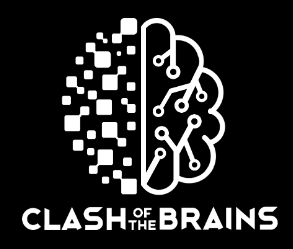
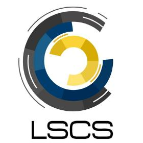

Experience
Technology Summit 2022

Technology Summit 2022
Web Developer
August 2022 - September 2022
A website for the Technology Summit held by the LSCS organization under DLSU.
- Coordinated with Project Managers to be able to confirm the necessary user stories and the respective site specifications especially regarding its feasibility aspect.
- Enforced Agile Development Methodology.
- Enforced GitHub Workflow for the structuring of the project.
- Enforced Basic Project Backlog Management and Tracking.
- Enforced proper practices when it comes to peer code review for every pull requests.
- Project Management through Trello and GitHub Issues.
- Developed the core foundational content of the site using the Vue framework, and the NuxtJS Meta Framework for easy redirects.
- Utilized structural organization of site content corresponding to Vue standards by appropriate assignment of page contents to either Vue pages or Vue components.
- Utilized Tailwind CSS for the UI Framework to design the site and allow for easy manipulation of CSS content, especially when it comes to positioning, sizing, and spacing, within the site to align with the designed high fidelity prototype.
- Utilized SCSS for an overall easier management of the color schemes and fonts of the website by making the configurations more centralized.
- Organized the assets directory according to CSS, Fonts, and Images, where each folder also have appropriate corresponding nested subdirectories, for a cleaner assets environment and code management.
- Conducted comprehensive QA throughout the entire front-end functionalities and HTTP redirects within the site.
- Enforced "Prettier" to make the codebase consistent, clean, and organized.
- Implemented a carousel image in the front page through importing and making use of the Vue 3 Carousel package.
- Deployed and hosted the website in Vercel.


Clash of the Brains 2022
Clash of the Brains 2022
Front-end Developer
June 2022 - July 2022
A website for the Clash of the Brains event competition held by the LSCS organization under DLSU.
- Enforced Agile Development Methodology.
- Enforced GitHub Workflow for the structuring of the project.
- Enforced Basic Project Backlog Management and Tracking.
- Enforced proper practices when it comes to peer code review for every pull requests.
- Project Management through Trello and GitHub Issues.
- Updated the front-end page footer and header content in VueJS/NuxtJS.
- Created a no background header Vue component to allow for reusability to other locations within the website.
- Fixed scaling of images of contact card components within tthe page so that it covers frames as opposed to it mistakenly stretching.
- Updated sources of image contents of Vue reactive data list to match new and updated image assets.
- Conducted comprehensive QA throughout the entire front-end functionalities and HTTP redirects within the site.

LSCS Website CMS
LSCS Website CMS
Front-end Developer and Website Manager
March 2022 - March 2023
A basic static home website of the LSCS organization under DLSU.
- Enforced GitHub Workflow for the structuring of the project.
- Enforced Basic Project Backlog Management and Tracking.
- Enforced proper practices when it comes to peer code review for every pull requests.
- Project Management through Trello.
- Updated the Vue reactive data content of people listings within the site.
- Updated and cleaned code styles (e.g., indentations and spacings) on certain Vue components to increase readability purposes.
- Conducted comprehensive QA throughout the entire front-end functionalities and HTTP redirects within the site.
DLSU LSCS Comelec


DLSU LSCS Comelec
Front-end Developer and Quality Assurance
December 2021 - November 2022
A secured voting web-application under the COMELEC of DLSU and the LSCS organization.
- Enforced Scrum Meetings and Agile Development Methodology.
- Enforced proper practices when it comes to peer code review for every pull requests.
- Project Management through Jira, GitHub Issues, and Zoom.
- Proposed the redesigning of front-end unintuitive facets of the application where the newly propose designed is aligned with UI/UX design practices.
- Developed and implemented the changes corresponding to the new design in VueJS.
- Developed and implemented visualization features for users authenticated and authorized as admins and moderators for the tracking of the users demographic distribution using Chart.JS.
- Connected the data from the back-end PostgreSQL database to the front-end visualization charts.
- Bug fixed and refactored discrepancies in the prepared statements of stored procedures for the PostgreSQL database in the back-end.
- Fixed discrepancies in the role vote listings with the existing schema in the PostgreSQL database.
- Tested the functionality of the implementation of Google 2.0 OAuth with its respective email receipt functionality.
- Tested and fixed functionalities of basic REST API Calls through the Thunder Client.
Disciples Christian Church - Digital Archives


Disciples Christian Church - Digital Archives
Back-end Developer and Test Automation Developer
November 2021 - March 2022
A church archive system that allows for the management, registration, and archiving of records for participants involved in the church's recorded religious activities such as baptisms, weddings, etc.
- Enforced Scrum Meetings and Agile Development Methodology.
- Enforced GitHub Workflow for the structuring of the project.
- Enforced Basic Test-Driven Development.
- Enforced Basic Project Backlog Management and Tracking.
- Enforced proper practices when it comes to peer code review for every pull requests.
- Project Management through Trello, GitHub Issues, and Slack.
- Implemented Jest and Sinon.JS Unit Tests in the CI/CD (Circle CI) Pipeline.
- Assisted in the implementation of End-to-End Testing through the use of Selenium/Robot Framework.
- Refactored the existing codebase for the back-end JavaScript stored procedures in connecting to the MySQL database to avoid slow and bloated nested callbacks through the use of promises.
- Fixed and matched discrepancies in the back-end stored procedures with the existing database schema.
- Assisted in the setting up for the blueprint in the containerization of the web application using Docker.
- Implemented data visualization for various records and functionalities through the use of Chart.JS.
- Maintained the back-end functionalities of the church archival system post-delivery for 2 months.
Jaelle Residences - Condotel Management System


Jaelle Residences - Apartelle Management System
Front-end Developer
July 2021 - October 2021
An ease-of-access local apartelle management system that allows for the tracking, booking, scheduling, managing, and payment between the entities of customers and rooms deployed through electronJS.
- Enforced Scrum Meetings and Agile Development Methodology.
- Enforced Basic Test-Driven Development.
- Enforced Basic Project Backlog Management and Tracking.
- Project Management through Trello, GitHub Issues, and Slack.
- Designed the intuitive foundation of the site through a Design Sprint Methodology while heeding to the core foundational UI/UX guidelines.
- Developed the entire core HTML elements and its respective Handlebars elements in the front-end.
- Developed the front-end design of the application through the Bootstrap UI framework and custom-fitted respective to the necessary functionalities with homebrew CSS and JS.
- Connected the front-end elements functionalities to the callbacks to the NodeJS/ExpressJS back-end.
- Maintained the front-end functionalities of the apartelle management system post-delivery for 2 months.